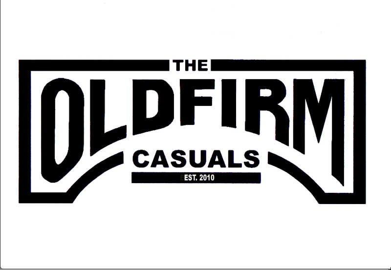

Lars Frederiksen is an American punk rock guitarist/vocalist. He was born as Lars Everett Dapello on August 30, 1971. Frederiksen grew up just outside of San Jose California in a town called Campbell. Frederiksen was rasied by a single mother, Minna Dapello and also had a brother, Robert, who died of a brain aneurysm when Lars was only a boy. Throughout Frederiksens youth he was exposed to drugs through his involvement in the Hells Angels, where he would run drugs for the gang.
During young adulthood Lars dropped out of high school to persue a career in music. Shortly after Lars would guest star in famous punk bands such as the U.K. Subs. Eventually he would team up with Tim Armstrong (famous guitar player from Operation Ivy) to become the lead guitar/Vocalist of Rancid. This decision would take lars to the top of the music charts in the 90's and even get him countless record deals with stars including Madonna, all of which Frederiksen would reject.Now Lars Frederiksen finds himself indulged in the world of sports. Frederiksen's favorite team is the San Jose Earthquakes, whose team theme song was written by Frederiksen himself. Lars is also involved in multiple charities including one with Tony Hawk where the two donate skateboards to teenagers in family shelters.
Lars Frederiksen's most successful album
 Lars Frederiksen's newest project